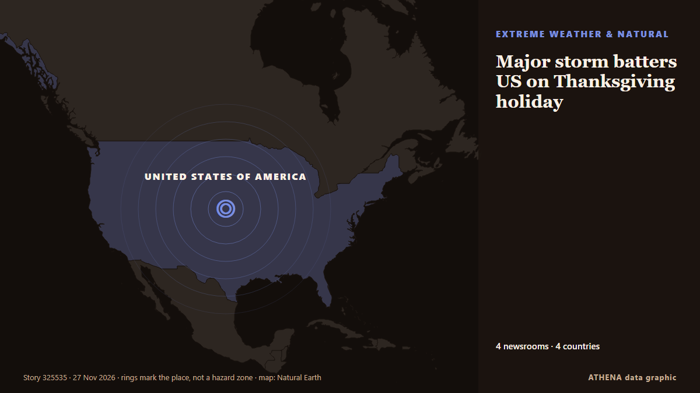

Énergie, ressources et environnement
SponsoriséPrésenté par  Cybernetics and Artificial Intelligence Lab Welcome to the Cybernetics and Artificial Intelligence Laboratory, established at the Department of Business Administration of the National and Kapodistrian University of Athens. The lab is headed by Professor Dimitrios Thomakos. The lab aims to do research that can be published in top venues. Our research uses tools and methods of Artificial Intelligence, and lies in the following areas: - Forecasting - Decision making - Cyber security - Finance We are always looking forward to collaborating with exceptional students!
Cybernetics and Artificial Intelligence Lab Welcome to the Cybernetics and Artificial Intelligence Laboratory, established at the Department of Business Administration of the National and Kapodistrian University of Athens. The lab is headed by Professor Dimitrios Thomakos. The lab aims to do research that can be published in top venues. Our research uses tools and methods of Artificial Intelligence, and lies in the following areas: - Forecasting - Decision making - Cyber security - Finance We are always looking forward to collaborating with exceptional students!
Les titres sont affichés en anglais, tels que publiés.

Météo extrême et catastrophesMajor storm batters US on Thanksgiving holiday
A powerful storm disrupted Thanksgiving celebrations for millions of Americans on Friday, as New York’s famed Macy’s parade was postponed for the first time in its 100-year history. de Dawn
| 14 nov. | 41 |
|---|---|
| 15 nov. | 51 |
| 16 nov. | 109 |
| 17 nov. | 87 |
| 18 nov. | 84 |
| 19 nov. | 80 |
| 20 nov. | 54 |
| 21 nov. | 43 |
| 22 nov. | 36 |
| 23 nov. | 78 |
| 24 nov. | 80 |
| 25 nov. | 61 |
| 26 nov. | 66 |
| 27 nov. | 15 |
Qatar LNG exports hit highest level since U.S.-Iran war began, Bloomberg reports
Shipments from Ras Laffan have risen 25 percent in a month, boosting supplies to Europe and Asia ahead of peak winter demand. de Doha News
Petronas Names ‘World's First’ Nearshore FLNG Facility
Petronas has officially named its third floating liquefied natural gas (FLNG) facility, PFLNG TIGA, at Samsung Heavy Industries' shipyard in South Korea, ahead of… de Offshore Engineer
Israel has turned Gaza into a 'toxic wasteland'
The new report examines the devastating environmental impacts of Israel’s attacks on the Palestinian strip. de TheJournal.ie
Iraq's oil revenues hit $8.8bn as it prepares to ask for higher Opec quota
Iraq's oil revenue from crude exports rose to $8.8 billion in October, the oil ministry said, as the country prepares to ask Opec to increase its quota at a meeting on Sunday. de The National
US pushed Venezuela, Iraq to consider leaving OPEC, sources say
The US also prevented Venezuela from paying its annual membership dues to the group. de The Straits Times
Italy weighs biggest hunting expansion in years, alarming wildlife groups
The Bill would open up more land to hunting, lengthen seasons and add previously protected species. de The Straits Times
Climate Conference COP31 Kicks Off Amid Climate, Finance Pressures
The summit comes after a year of punishing heatwaves in Europe, major wildfires in Indonesia and catastrophic floods in Nepal, with an exceptionally strong El Nino weather phenomenon fuelling more… de NDTV
'King tide' waves batter California coast, soaking San Francisco
Massive waves carried on king tides battered California's coast Wednesday, prompting evacuations and soaking San Francisco, but sparing feared mass disruptions to Thanksgiving holiday travel. de Phys.org
Davis calls for greater self-reliance after COP31 disappointment
PRIME Minister Philip Davis told Parliament yesterday that the latest UN climate summit ended without naming fossil fuels as the cause of the climate crisis and dropped a key target for adaptation… de The Bahamas Tribune
Bangchak halts Thai refinery as 7 hurt in fire
The cause of the incident is under investigation. de The Business Times
Detonation of degraded lead azide in US's Iowa raises public concern
The Army went ahead with its planned detonation of volatile lead azide reserves Wednesday morning, according to the service. de Defense News
Black Friday Kicks Off in Greece With Discounts of Up to 70%
Black Friday is here, with discounts of up to 70%. de to vima
IAEA working with Russia, Ukraine on ceasefire to repair power link at Zaporizhzhia nuclear plant
Nov 26 - The UN nuclear watchdog said on Thursday it was working with Russia and Ukraine to arrange a new local ceasefire at the Russian-held Zaporizhzhia nuclear power plant, following another loss… de The Straits Times
Worker killed, several others injured in attack on Saudi Arabia’s Jazan oil refinery
Saudi Energy Ministry says the attack sparked a fire and temporarily disrupted some refinery operations. de Anadolu Agency (English)
Macy's Thanksgiving Day Parade postponed due to weather for first time in 100 years
The 100th edition of the annual Macy's Thanksgiving Day Parade in New York City will be postponed for two days until Saturday due to forecasts of a major storm with high winds, marking the first time… de Tuoi Tre News
UK to Invest £9.5 Million in Ukraine Wind Farm to Be Built by Elementum Energy
The UK is to invest £9.5 million ($12.4 million) in a 200 MW wind farm in Ukraine capable of powering 300,000 households. de Kyiv Post
Oil slips over 1% as supply glut prospect offsets Middle East disruption fears
Brent crude futures drop $1.35, or 1.5%, to $90.05 a barrel. de Express Tribune
Trafigura appoints Helio Cumbi as Executive Director, Mozambique
Trafigura has appointed Helio Cumbi as Executive Director, Mozambique, and Business Development Lead for East and Southern Africa Oil. de Club of Mozambique
Saudi Red Sea Authority launches new marine wildlife guide
JEDDAH: The Saudi Red Sea Authority has launched the Kingdom’s first seasonal guide to viewing large marine animals, helping visitors to plan wildlife encounters while promoting responsible tourism. de Arab News
Forum Chair backs Australia’s COP31 role as Albanese defends conference spending
Australian Prime Minister Anthony Albanese has defended the cost of hosting and participating in COP31, saying climate action is a matter of Australia's national interest, regional security and its… de Post-Courier (PNG)
Heavy rain, wind and flooding plague much of US on Thanksgiving holiday
High winds, heavy rains and flooding plagued both coasts, complicating travel. de Courthouse News
Nepal begins process to declare 213 missing Indians dead in August floods
The Nepalese government has also shared details of the missing Indians, such as their names and government identity card numbers. de Hindustan Times
Fincantieri Delivers Hybrid Hydrogen-Powered Cruise Ship to Viking
Fincantieri delivered the first of two new cruise ships to Viking that are outfitted with the latest advancements in hydrogen propulsion. de The Maritime Executive
Ministers have ‘failed to make the case’ for Heathrow third runway, MPs say
Transport committee says policy papers show expanding airport would fall short of pledges on economy and climate Ministers have “failed to make the case” for a third runway at Heathrow, according to… de Guardian Environment
Large-scale power outage hits Russian-occupied Crimea, disrupts transport
The outage comes amid weeks of electricity shortages across the Russian-annexed Crimean Peninsula. de Kyiv Independent
Samsung and DNV team up on nuclear-powered LNG carrier
Samsung Heavy Industries, Tesser Atomics, NTNU and DNV to develop nuclear-powered LNG carrier concept for transatlantic trade. de Seatrade Maritime
Energean unlocks new gas potential in the Adriatic, strengthening Croatia’s energy security
Energean announced the successful drilling of Irena-3 in the Adriatic, in partnership with INA. de Naftemporiki (English)
Taliban Say Second-Phase Excavation on Qosh Tepa Canal Is 99% Complete
Afghanistan’s Taliban government says 99% of excavation work on the second phase of the Qosh Tepa Canal is complete, bringing. de The Times of Central Asia
Equinor, JAPEX agree NCS asset swap, trading Goliat stake for more of Verdande
Equinor will trade an 8% stake in Goliat and interests in two Norwegian Sea exploration licenses to JAPEX in exchange for JAPEX's 3.5% stake in Verdande and $65 million in cash. de World Oil
US army to detonate 68 barrels of toxic lead in Iowa on day before Thanksgiving
Residents warned to stay indoors amid conflicting information about how far the dust plume could travel The US Army is set to detonate 68 barrels – five tons – of lead azide at an ammunition plant in… de The Guardian
Sixteen dead and 10 missing as rescuers battle flooded Indonesian gold mine
Police only received reports of the trapped miners 16 hours after the flooding had occurred. de SBS News
Army plan to detonate lead azide in Iowa 'insane': Attorney
An attorney representing victims of the Sept. de The Hill
Pope Leo XIV calls collapse of COP31 climate talks in Turkey ‘worrying’
Pope Leo XIV on Wednesday called the failure of the United Nations’ COP31 climate talks in Turkey “worrying,” saying the climate crisis affects millions of people. de Turkish Minute
‘King tide’ waves batter California coast, soaking San Francisco
This year's tides are predicted to be at their highest level, coinciding with El Nino-fueled storms, and the impact was catastrophic. de Le Monde (English)